Liam — El Explorador Visionario
Guardián · Explorador VisionarioGuardián de las historias, del sueño y del pueblo. Su lámpara dorada ilumina el camino en la más densa oscuridad y simboliza la claridad y el propósito.
Toca el texto donde quieres empezar. Escape cancela.
Capítulo 02 • Nueva Presentación
Después del Jardín de Aides, Liam y Elara enfrentan los susurros no dichos del pueblo. Bajo un sauce llorón milenario, descubrirán que escuchar es reflejar — y que todo espejo claro puede disipar la tormenta interior.
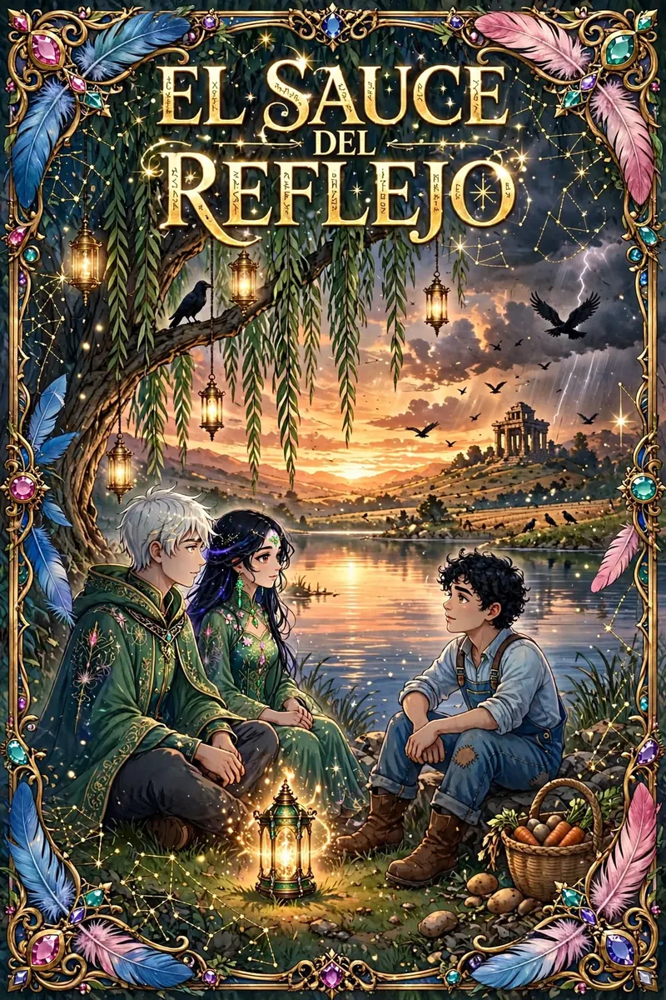
Edición ilustrada • Middle Grade +10
Middle Grade Recomendado +10 Años
Guardián de las historias, del sueño y del pueblo. Su lámpara dorada ilumina el camino en la más densa oscuridad y simboliza la claridad y el propósito.

Su lámpara transforma las sombras en narraciones llenas de sabiduría. Escucha lo que otros callan y enseña el poder del lenguaje para crear realidades nuevas.

Joven jardinero con un jardín mental grande pero descuidado. Su viaje representa el de quien decide hacerse responsable de su propio jardín interior.
Fichas completas: Liam · Elara · Aides · Ver todos los personajes
Liam y Elara habían regresado del templo con el relato del Jardín de Aides aún resonando en sus corazones. Habían compartido la historia con su pueblo, y el cambio ya comenzaba a vislumbrarse en los rostros de sus vecinos, quienes empezaban a cuidar sus propios jardines mentales con renovada esperanza y determinación.
Sin embargo, la oscuridad que había traído la tormenta aún rondaba el pueblo. Las aves negras seguían posadas alrededor del templo, vigilantes y amenazadoras, y la gente vivía con un sentimiento persistente de inquietud. Era como si el aire estuviera cargado de susurros de temores y preocupaciones que nadie se atrevía a expresar.
p. 24
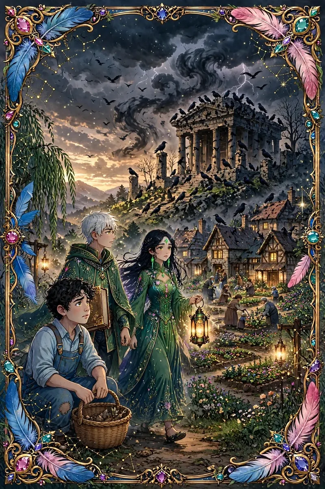
Liam y Elara sabían que, para enfrentar esta oscuridad, debían buscar una sabiduría más profunda, una que les permitiera escuchar lo que no se decía y reflejar con claridad las preocupaciones del pueblo.
Un día, mientras paseaban por los bosques en busca de respuestas, encontraron un anciano sauce llorón al borde de un lago sereno. Sus ramas colgaban como cortinas verdes, y sus hojas susurraban al viento una melodía suave y constante. El sauce era conocido como el “Sauce del Reflejo” y se decía que podía revelar las verdades ocultas de aquellos que se sentaran a su sombra.
“No vine a dar respuestas. Vine a devolverte el cielo que ya traías dentro.”
p. 26
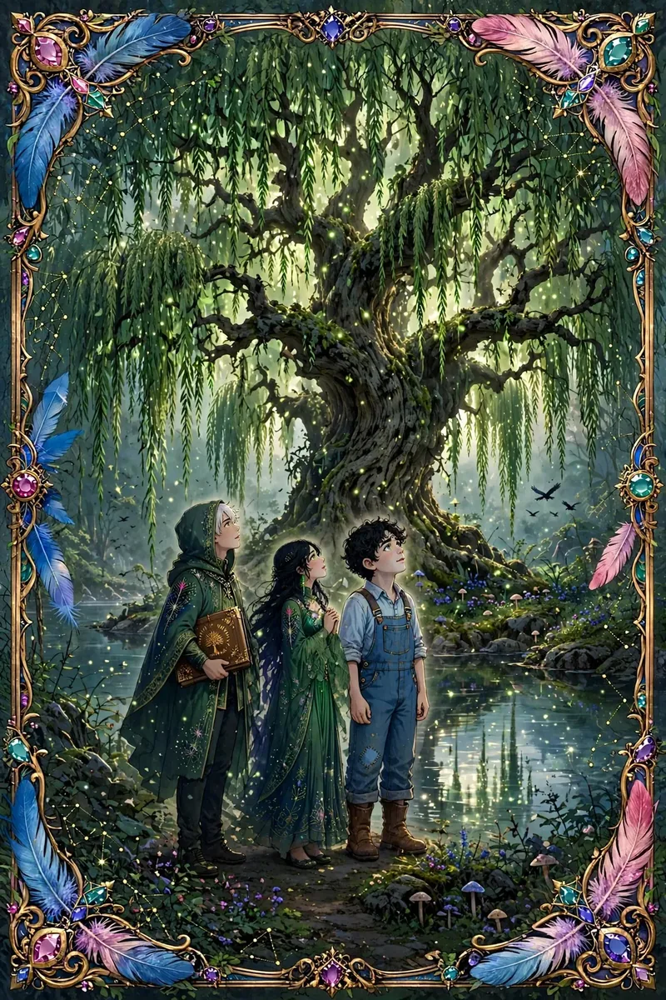
Intrigados, los jóvenes guardianes se acercaron y se sentaron junto al árbol, dejando que la calma del lugar los envolviera. Pronto, sintieron que el sauce los llamaba a escuchar de una manera nueva, a convertirse en espejos claros para el pueblo, reflejando las palabras y emociones de sus habitantes para ayudarles a ver sus propios pensamientos con mayor claridad.
Bajo las ramas colgantes, con los faroles encendidos y el agua devolviendo su reflejo, comprendieron: escuchar es sostener un espacio donde el otro puede verse.
p. 29
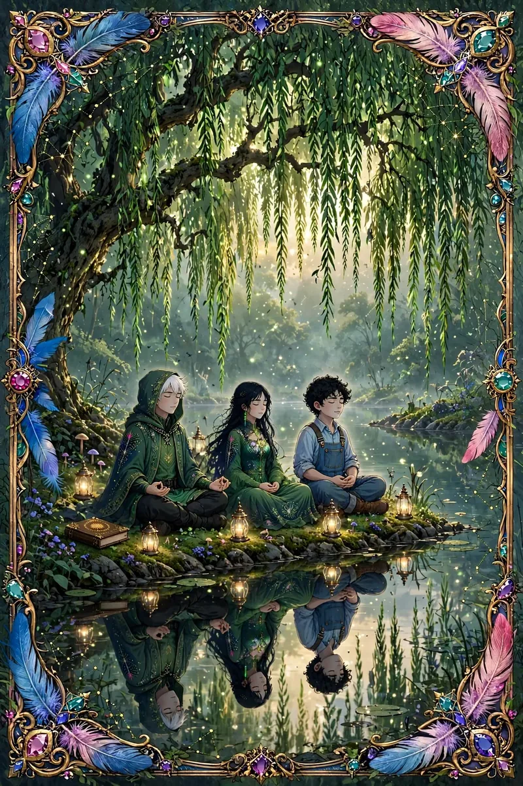
Elara cerró los ojos y sintió el murmullo del árbol como un eco de las voces del pueblo. “Liam,” susurró, “debemos aprender a escuchar con el corazón, a reflejar las palabras y emociones de nuestro pueblo para que puedan encontrar sus propias soluciones.”
Liam asintió, comprendiendo que el sauce llorón les enseñaba la importancia de la escucha activa. “Escuchar activamente es como ser un espejo claro para el hablante,” reflexionó. “Reflejamos sus palabras y emociones, permitiéndoles ver sus pensamientos con mayor claridad y ayudándolos a descubrir nuevas perspectivas.”
El murmullo no era viento. Era el pueblo que por fin se atrevía a ser escuchado.
p. 31
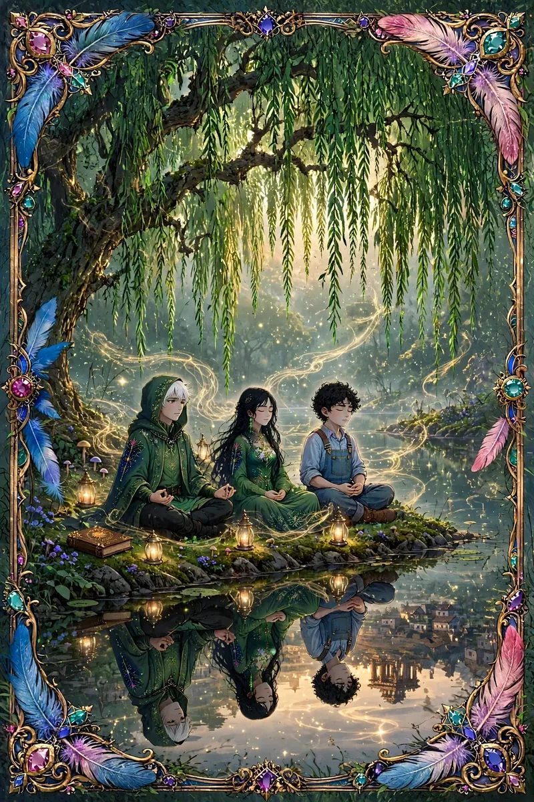
Con esta nueva comprensión, decidieron invitar a los habitantes del pueblo a reunirse bajo el sauce llorón. Allí, cada persona podría compartir sus inquietudes y esperanzas, mientras Liam y Elara actuaban como espejos, devolviendo a cada hablante una imagen más clara de sus propios pensamientos y sentimientos.
El primero en acudir fue Tomas, un joven agricultor que había perdido sus cosechas debido a la tormenta. Al escuchar su relato, Elara le reflejó sus palabras con empatía, permitiéndole ver que, aunque había perdido mucho, también tenía la oportunidad de replantearse su forma de cultivar, usando nuevas técnicas que había aprendido, pero nunca se había atrevido a probar.
p. 33
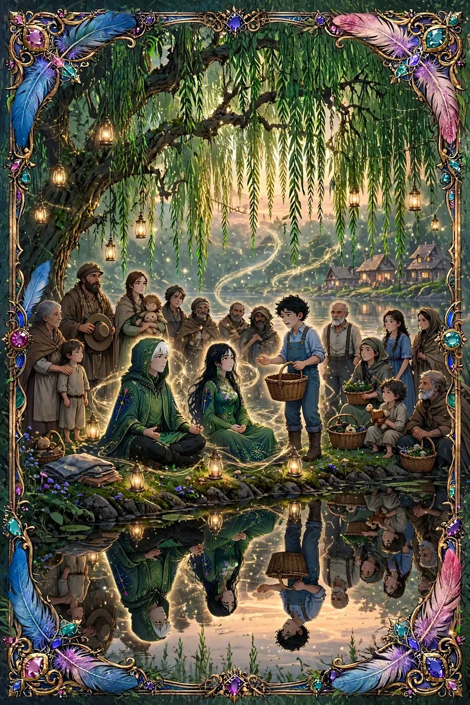
Preguntas Poderosas de Elara
“¿Qué posibilidades se abren ahora que has perdido tus cosechas?”
“¿Qué recursos dentro de ti puedes descubrir en este momento de desafío?”
Con estas preguntas, Tomas comenzó a cambiar su observador interno, viendo su situación con ojos renovados. Poco a poco, otros se unieron a la reunión bajo el sauce llorón, compartiendo historias de miedo y esperanza, de pérdida y posibilidad.
Cada relato era una oportunidad para escuchar y reflejar, para ayudar a cada persona a encontrar claridad en su propia experiencia.
Transformar la pérdida en posibilidad no es olvidar, es preguntar con amor hasta que el reflejo devuelve futuro.
p. 35
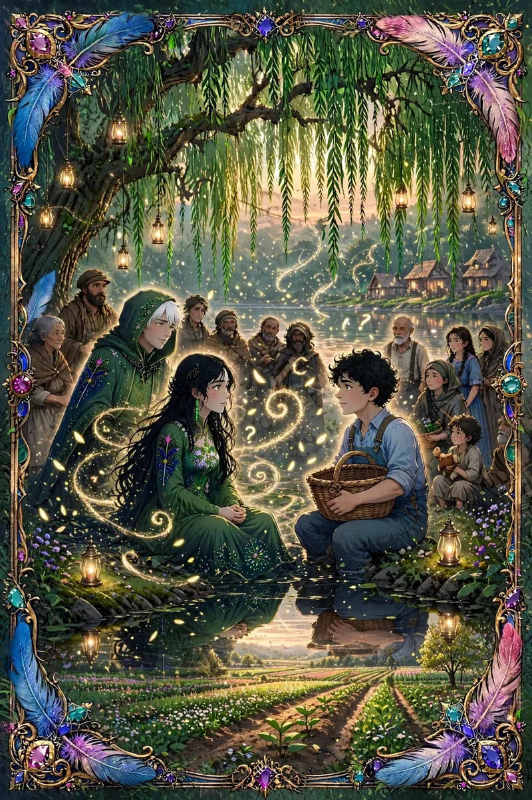
Continuación — Miedo en Comprensión
Transformar el miedo en comprensión, el aislamiento en comunidad.
A medida que el pueblo se reunía y compartía sus historias, la oscuridad comenzó a disiparse. La comunidad empezó a sentir una renovada conexión entre sí y con su propia sabiduría interior. El aire se llenó de un nuevo sentido de esperanza, como si el peso que había oprimido sus corazones se hubiera aligerado.
Liam y Elara aplicaron principios de coaching ontológico, ayudando a cada persona a observar su realidad desde una nueva perspectiva, invitándolos a desafiar sus interpretaciones limitantes y a elegir acciones alineadas con sus valores más profundos.
El círculo en el agua no separa, reúne. Cada mano sostenida devuelve reflejo.
p. 38
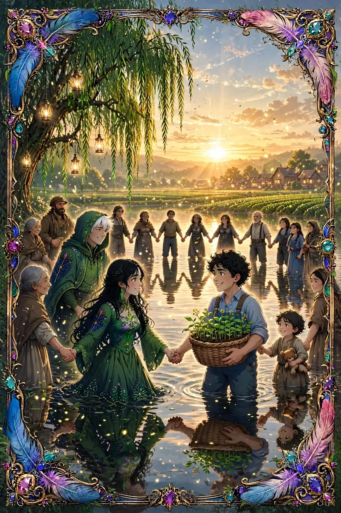
Finalmente, Liam y Elara se dieron cuenta de que el verdadero poder de la escucha activa radicaba en su capacidad para transformar el miedo en comprensión y el aislamiento en comunidad. Habían aprendido que el acto de escuchar era en sí mismo un faro de luz en la oscuridad, un medio para liberar al pueblo de sus propias sombras.
Con esta nueva fuerza, Liam y Elara estaban listos para enfrentar el próximo desafío: comprender la esencia de las historias que los unirían y transformarían a su comunidad. Sabían que el viaje aún no había terminado y que, con cada relato, descubrirían más sobre ellos mismos y el destino que los aguardaba.
Y así, bajo la guía del Sauce del Reflejo, los jóvenes guardianes y su pueblo se prepararon para el próximo capítulo de su historia, iluminados por la claridad de sus propios pensamientos y la fortaleza de su comunidad.
p. 42
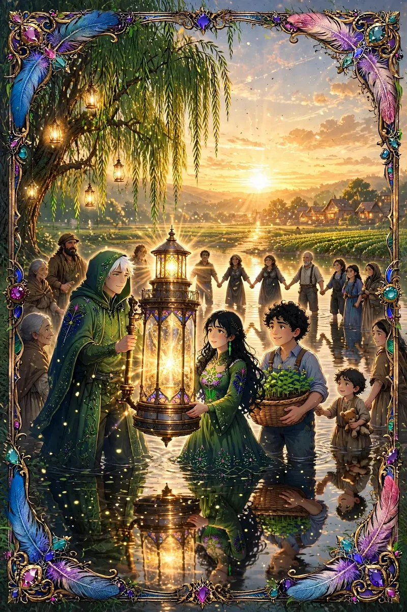
Fin de Parte I & II • El espejo claro revela camino
01 / 04
Coaching OntológicoEl Sauce del Reflejo simboliza la esencia de la escucha activa. Escuchar con atención y empatía no solo permite comprender palabras, sino emociones profundas. ¿Cómo estás escuchando a los demás? ¿Estás realmente presente y disponible para reflejar lo que dicen y sienten?
Escuchar es devolver al otro su propia música, no imponer la nuestra.
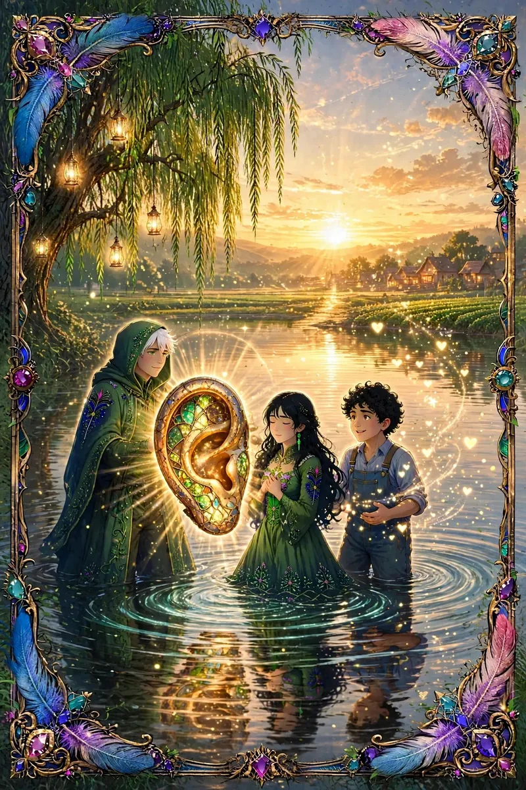
02 / 04
Espejo OntológicoLiam y Elara aprenden a ser espejos claros para su pueblo. En coaching, reflejar con precisión y sin juicio ayuda al otro a ver sus desafíos desde una nueva perspectiva y encontrar soluciones no consideradas. ¿Cómo puedes actuar como espejo en tu día a día?
No es mostrar tu rostro, es devolverle al otro el futuro que aún no se atreve a ver.
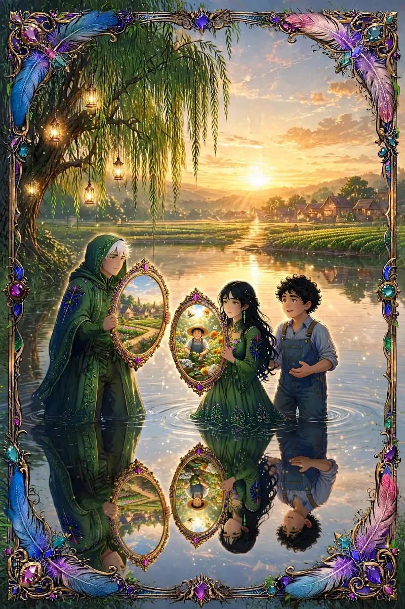
03 / 04
InterpretacionesElara desafía a Tomas con preguntas poderosas. ¿Qué creencias limitantes te impiden avanzar? ¿Cómo puedes desafiar esas interpretaciones para abrirte a nuevas posibilidades? Las preguntas poderosas rompen patrones que nos mantienen estancados.
La cadena no era de hierro, era de historias que ya no sirven. Al nombrarlas, se hacen mariposas.
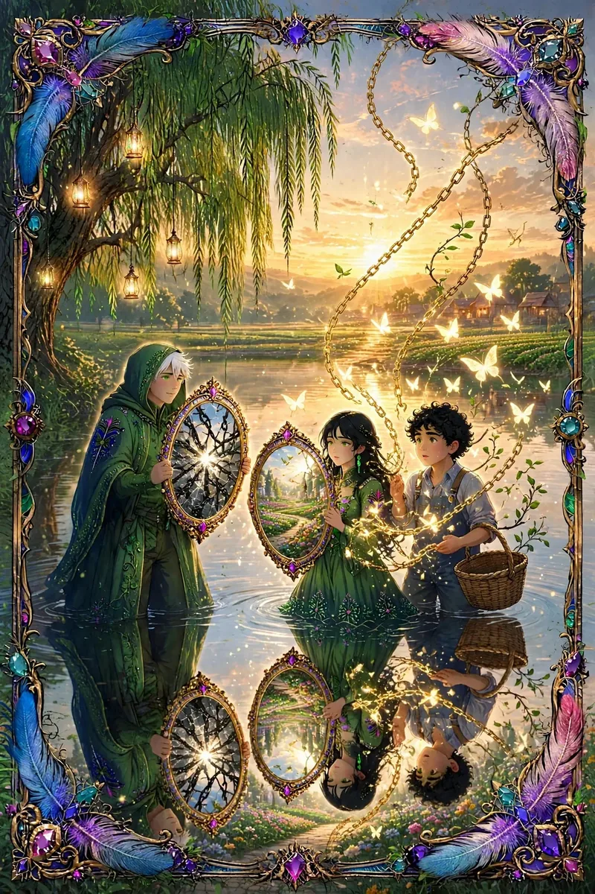
04 / 04
Comunidad + TransformaciónLa oscuridad del pueblo es el miedo que todos enfrentamos. A través de la escucha y el reflejo, el miedo se vuelve comprensión. La transformación no ocurre en aislamiento, sino en relación. ¿Cómo contribuyes al crecimiento de tu comunidad?
Cierre épico • Amanecer dorado
Invitación final
¿Qué cadena tuya está lista para convertirse en mariposa hoy?
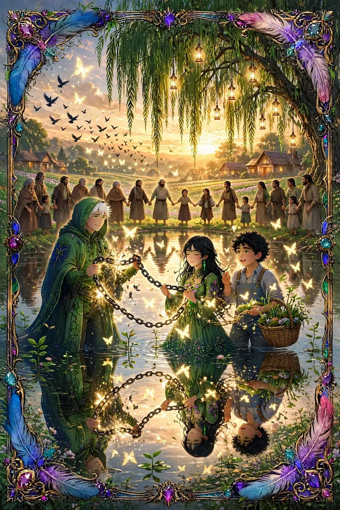
Continuación Completa • Cap. 02 Ilustrado
Locus Finalis
Nota Editorial“El aire se llenó de un nuevo sentido de esperanza”
La comunidad empezó a sentir una renovada conexión entre sí y con su propia sabiduría interior. El peso que había oprimido sus corazones se aligeró bajo la escucha.
El pueblo comienza a sanar
A medida que el pueblo se reunía y compartía sus historias, la oscuridad comenzó a disiparse. La comunidad empezó a sentir una renovada conexión entre sí y con su propia sabiduría interior. El aire se llenó de un nuevo sentido de esperanza, como si el peso que había oprimido sus corazones se hubiera aligerado.
Liam y Elara aplicaron principios de coaching ontológico, ayudando a cada persona a observar su realidad desde una nueva perspectiva, invitándolos a desafiar sus interpretaciones limitantes y a elegir acciones alineadas con sus valores más profundos.
Finalmente, Liam y Elara se dieron cuenta de que el verdadero poder de la escucha activa radicaba en su capacidad para transformar el miedo en comprensión y el aislamiento en comunidad. Habían aprendido que el acto de escuchar era en sí mismo un faro de luz en la oscuridad, un medio para liberar al pueblo de sus propias sombras.
Con esta nueva fuerza, Liam y Elara estaban listos para enfrentar el próximo desafío: comprender la esencia de las historias que los unirían y transformarían a su comunidad. Sabían que el viaje aún no había terminado y que, con cada relato, descubrirían más sobre ellos mismos y el destino que los aguardaba.
Y así, bajo la guía del Sauce del Reflejo, los jóvenes guardianes y su pueblo se prepararon para el próximo capítulo de su historia, iluminados por la claridad de sus propios pensamientos y la fortaleza de su comunidad.
FIN CAPÍTULO 02
El encuentro con el Sauce nos enseña que cada uno puede ser espejo. Cuatro llaves para practicar.
El Sauce del Reflejo simboliza la esencia de la escucha activa. Escuchar con atención y empatía no solo permite comprender palabras, sino emociones profundas. ¿Cómo estás escuchando a los demás? ¿Estás realmente presente y disponible para reflejar lo que dicen y sienten?
Liam y Elara aprenden a ser espejos claros para su pueblo. En coaching, reflejar con precisión y sin juicio ayuda al otro a ver sus desafíos desde una nueva perspectiva y encontrar soluciones no consideradas. ¿Cómo puedes actuar como espejo en tu día a día?
Elara desafía a Tomas con preguntas poderosas. ¿Qué creencias limitantes te impiden avanzar? ¿Cómo puedes desafiar esas interpretaciones para abrirte a nuevas posibilidades? Las preguntas poderosas rompen patrones que nos mantienen estancados.
La oscuridad del pueblo es el miedo que todos enfrentamos. A través de la escucha y el reflejo, el miedo se vuelve comprensión. La transformación no ocurre en aislamiento, sino en relación. ¿Cómo contribuyes al crecimiento de tu comunidad?
01 / 05
Símbolo del InconscienteEl Sauce representa el inconsciente, donde emociones y recuerdos reprimidos emergen. Como el terapeuta que revela lo oculto, el árbol permite al pueblo ver con claridad sus inquietudes. ¿Qué aspectos de tu vida permanecen en sombra?
El tronco no es madera, es archivo. Cada llave colgada abre una historia que no quisiste mirar.
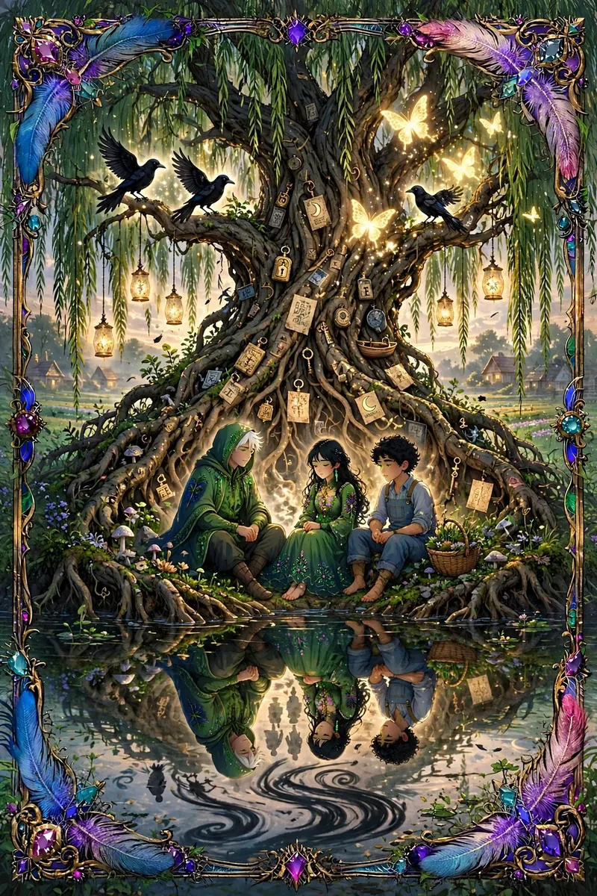
02 / 05
Conflicto InternoLa oscuridad que envuelve al pueblo simboliza angustia y miedos reprimidos. También enfrentamos tormentas internas: traumas no resueltos o emociones evitadas. El miedo no desaparece solo, necesita ser procesado.
Las aves no son enemigas, son mensajeras de lo que no has querido nombrar. La tormenta pasa cuando la miras de frente.
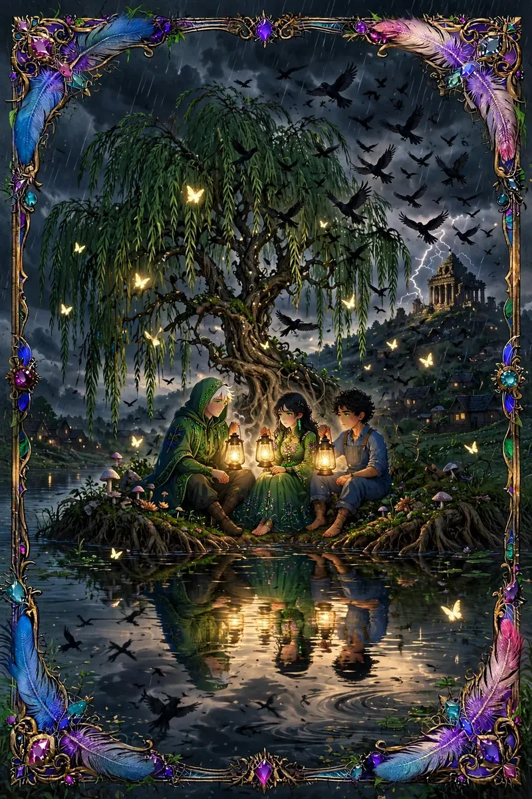
03 / 05
Escucha como TransferenciaLos protagonistas aprenden a escuchar profundamente, reflejando pensamientos. En psicoanálisis, esto es la transferencia: el terapeuta como espejo que permite al paciente verse con mayor claridad.
En el reflejo del agua, Tomas ya no está solo. El espejo devuelve futuro, no pasado.
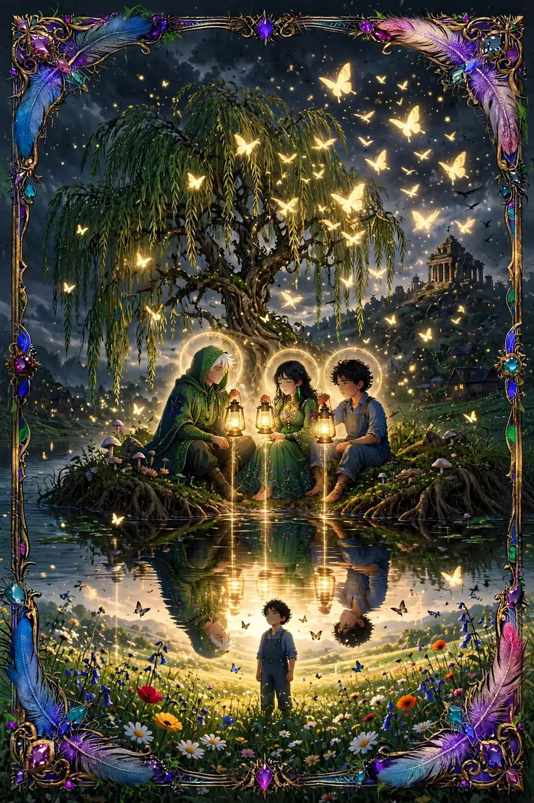
04 / 05
ReinterpretaciónElara desafía creencias de Tomas con preguntas poderosas, facilitando reinterpretar la realidad. Nuestras percepciones están limitadas por experiencias pasadas o miedo al cambio. ¿Cuántas posibilidades ignoramos?
Lo que hoy te encadena fue una historia que te protegió. Honrarla es el primer paso para soltarla.
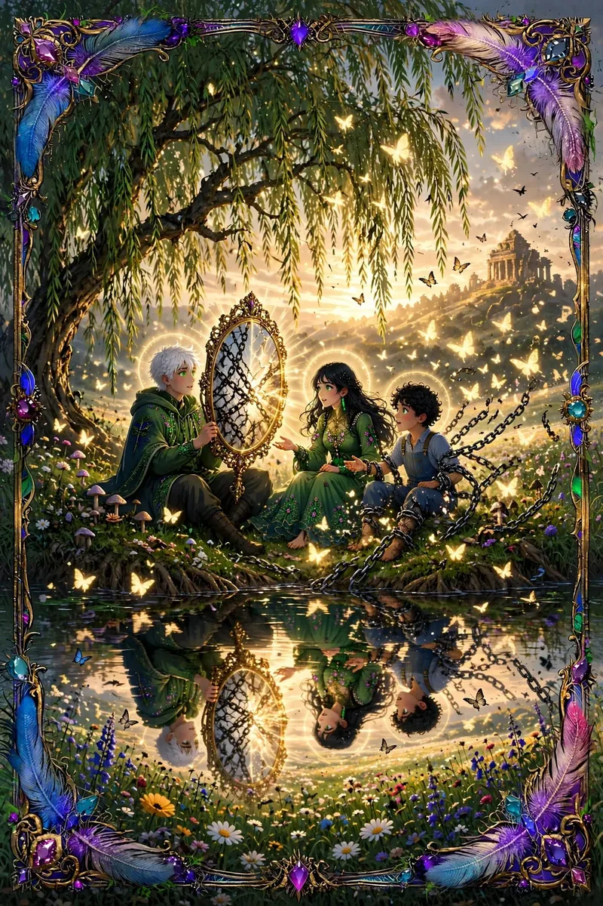
05 / 05
Cierre Épico • Sanación ColectivaEl pueblo encuentra transformación colectiva bajo el sauce. En psicoterapia, compartir y verbalizar experiencias nos ayuda a integrarlas. El apoyo mutuo es fundamental para superar incertidumbre y miedo.
Cuando una historia se dice en círculo, deja de ser carga y se vuelve puente. Los cuervos no desaparecen, aprenden a volar como mariposas.
Cierre de sección psicoanalítica
Fin Psicoanálisis • El Sauce revela
Fin Análisis Psicoanalítico • 5 espejos del inconsciente
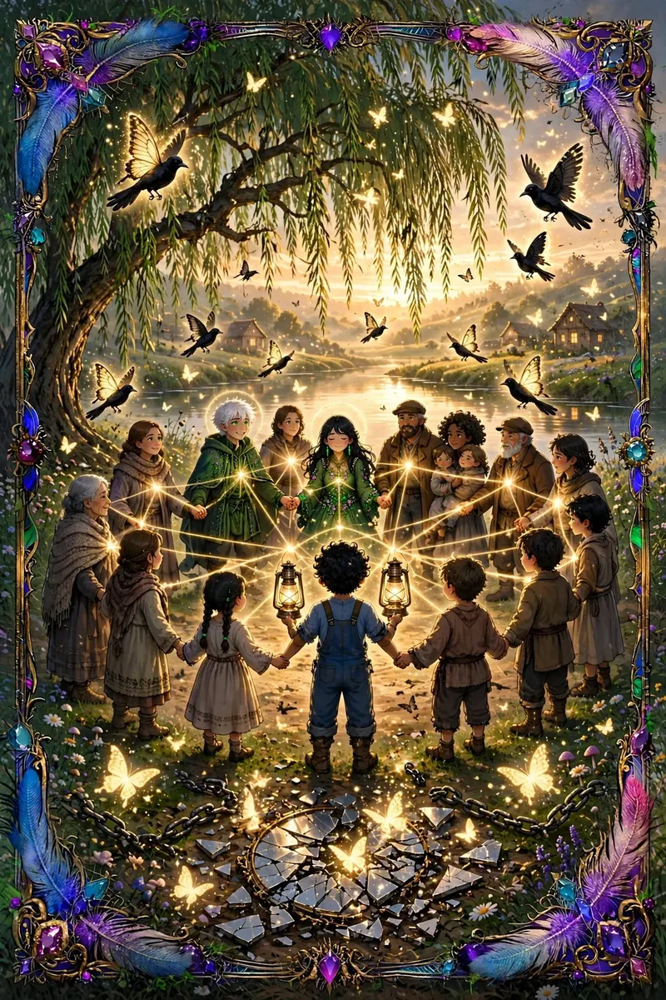
5 prácticas inspiradas en coaching ontológico y psicoanálisis. Haz clic para expandir cada ejercicio y practicar con presencia.
Práctica del Espejo
Solo Texto • Solo Presencia
Instrucciones
Reflexión
Instrucciones
Reflexión
Instrucciones
Reflexión
Instrucciones
Reflexión
Instrucciones
Reflexión
Estampas en pixel art de lo que aparece en «El Sauce del Reflejo». Toca una para verla más grande.


“¿Estamos listos para convertirnos en espejos claros, tanto para nosotros mismos como para los demás?”
El relato de El Sauce del Reflejo nos muestra cómo la escucha y el reflejo pueden ser herramientas poderosas para el crecimiento personal y comunitario. A través del Coaching Ontológico, aprendemos a escuchar de manera activa y a cuestionar nuestras creencias, mientras que el Psicoanálisis nos ayuda a mirar en lo profundo de nuestra psique.